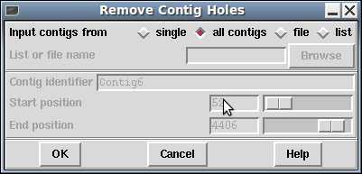

Unlike Gap4, Gap5 permits contig regions with zero coverage. These can naturally occur when using sequence mapping to known references. However in a denovo assembly context they are not desireable.

Some algorithms have check boxes querying whether you wish holes to be removed by breaking contigs up, but this dialogue offers a choice of fixing the holes at a later stage.
It identifies all regions of zero coverage and will break the contig into multiple fragments.